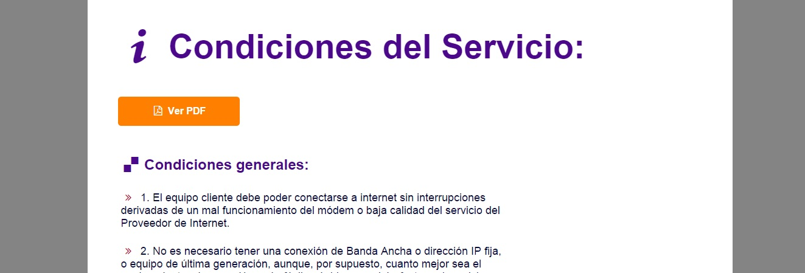

PSP-Informática
This website was made for a spanish company from scratch. The desing is classic, keeping a formal structure. This web page is used to provide further information about the servicies that the company is offering now. They can also both get in contact with the company and dowload some antivirus trial versions.
Link to the website: PSP-Informática